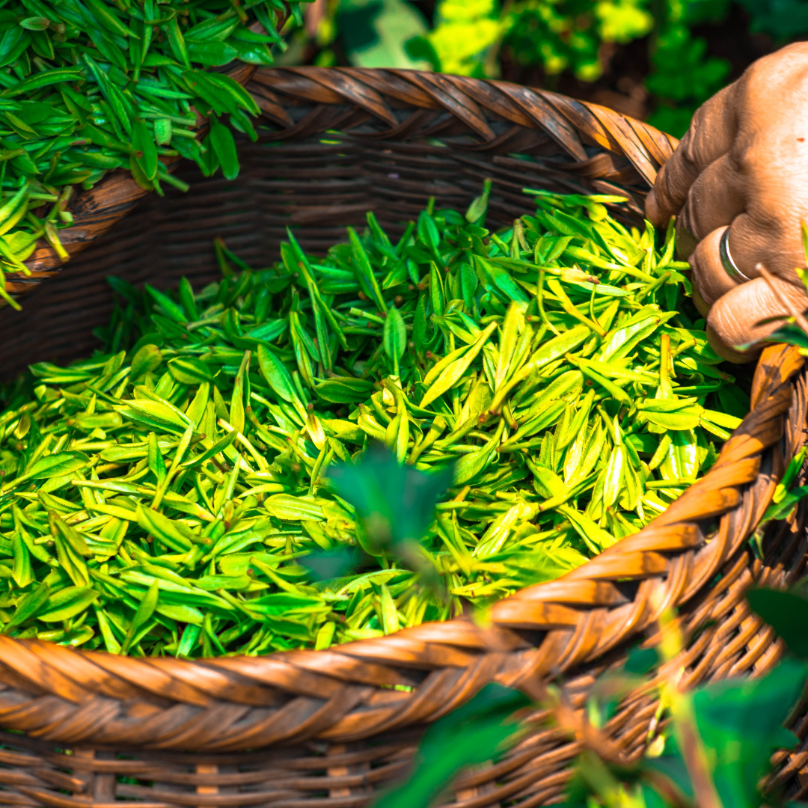
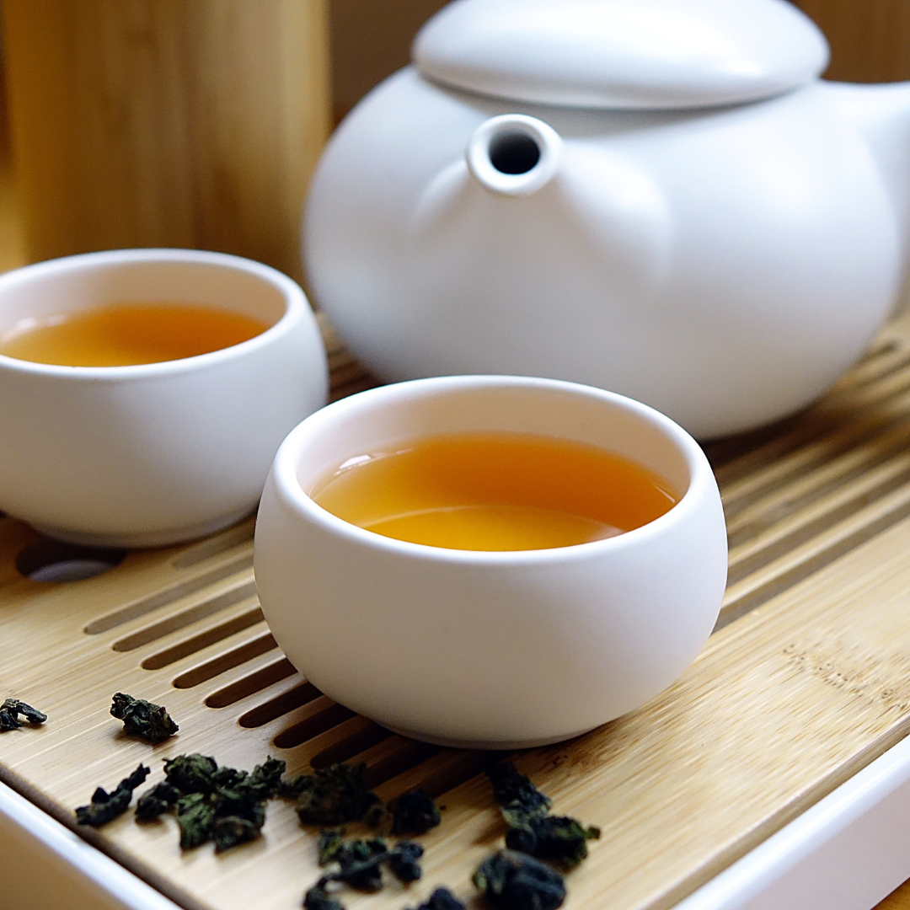

The history of tea dates back to ancient China, around 2737 BCE, when Emperor Shen Nong accidentally discovered tea while boiling water under a tree. According to legend, leaves from the Camellia sinensis tree blew into his pot, creating a delightful and aromatic infusion. This serendipitous discovery marked the beginning of tea's journey through time. Tea gained popularity in China, evolving from a medicinal beverage to a daily drink. By the Tang Dynasty (618-907 CE), tea had become an integral part of Chinese culture, with elaborate tea ceremonies reflecting its importance. The Chinese tea culture eventually spread to Japan, where it was embraced and refined into the art of the Japanese tea ceremony. In the 16th century, Portuguese and Dutch traders introduced tea to Europe, where it became a fashionable drink among the elite. The British, in particular, developed a deep affinity for tea, establishing vast plantations in India and Sri Lanka to satisfy their growing demand. Today, tea is enjoyed worldwide, with each culture adding its unique twist to this ancient brew.
Tea is renowned for its numerous health benefits, making it more than
just a comforting drink. Here are some of the key benefits associated
with tea consumption:
Rich in Antioxidants: Tea, especially green and white
varieties, is packed with antioxidants like catechins and polyphenols,
which help combat oxidative stress and reduce the risk of chronic
diseases.
Boosts Mental Alertness: The caffeine and amino acid
L-theanine in tea work together to enhance brain function, improving
focus, alertness, and cognitive performance without the jittery
effects often associated with coffee.
Supports Heart Health: Regular tea consumption has
been linked to improved cardiovascular health. Flavonoids in tea can
help lower blood pressure, reduce LDL cholesterol levels, and improve
blood vessel function.
Aids in Weight Management: Certain types of tea, such
as green tea, can boost metabolism and increase fat burning, making
them effective aids in weight management and obesity prevention.
Enhances Immune Function:
Compounds in tea, such as polyphenols and flavonoids, can enhance
immune function and provide anti-inflammatory effects, helping the
body fend off infections and illnesses.
Promotes Digestive Health: Herbal teas, like
peppermint and ginger tea, are known for their digestive benefits,
helping to alleviate symptoms of indigestion, nausea, and bloating.
Tea comes in various forms, each with its unique flavor profile,
preparation method, and health benefits. Here are some of the most
popular types of tea:
Green Tea: Made from unoxidized leaves, green tea is
known for its delicate flavor and high antioxidant content. It is
often associated with numerous health benefits, including weight loss
and improved brain function.
Black Tea: Fully oxidized, black tea has a robust and
bold flavor. It's the most commonly consumed tea worldwide and is the
base for popular blends like Earl Grey and English Breakfast.
Oolong Tea: Partially oxidized, oolong tea falls
between green and black tea in terms of flavor and oxidation level. It
offers a rich and complex taste, often with fruity or floral notes.
White Tea:
The least processed of all teas, white tea is made from young leaves
and buds. It has a subtle, delicate flavor and is high in
antioxidants, making it a popular choice for health enthusiasts.
Herbal Tea:
Technically not true tea, herbal teas are infusions of herbs, spices,
flowers, or fruits. Popular varieties include chamomile, peppermint,
and rooibos. They are caffeine-free and often enjoyed for their
soothing properties.
Pu-erh Tea: A unique type of fermented tea from
China, pu-erh tea undergoes an aging process that imparts a distinct,
earthy flavor. It is believed to offer various health benefits,
including improved digestion and reduced cholesterol levels.
Tea, with its rich history, diverse types, and numerous health benefits, remains a timeless beverage that continues to captivate and comfort people around the world. Whether you're sipping on a delicate green tea, enjoying a robust black tea, or relaxing with a soothing herbal infusion, there's a tea for every occasion and preference. So, the next time you brew a cup, take a moment to appreciate the centuries of tradition and the myriad of benefits that come with every sip.

Tea, one of the most consumed beverages globally, transcends cultures and borders, each country embracing and adapting it to their unique customs and traditions. From the ceremonial practices of East Asia to the hearty brews of the British Isles, the way tea is enjoyed around the world is as diverse as the regions themselves. Let's explore how different countries celebrate and use tea in their daily lives.
The Birthplace of Tea In China, tea is deeply ingrained in the culture and daily life. The Chinese tea ceremony, known as "Gongfu Cha," emphasizes the art and precision of tea-making. This traditional ceremony is a meditative practice, involving multiple steepings of tea leaves in a small teapot, allowing the flavors to develop over several rounds. Popular varieties in China include green tea, such as Longjing (Dragon Well), and Pu-erh tea, which is prized for its aged and fermented qualities.
The Art of Tea Ceremony Japan has elevated tea drinking to an art form with its traditional tea ceremony, "Chanoyu" or "Sado," centered around the preparation and presentation of matcha, a finely ground green tea powder. This ritual is deeply spiritual, focusing on mindfulness, harmony, and respect. The ceremony often takes place in a tea room designed to enhance the aesthetic and spiritual experience. Outside of the formal ceremony, Japanese people commonly enjoy green teas like Sencha and Genmaicha, which blend green tea with roasted brown rice.
The Land of Chai In India, tea is synonymous with "chai," a spiced tea blend made by brewing black tea with a mixture of aromatic spices and herbs, typically including cardamom, cinnamon, ginger, cloves, and black pepper. This blend is then mixed with milk and sugar, creating a rich, flavorful beverage. Chai is an integral part of daily life in India, enjoyed at any time of day and often served to guests as a sign of hospitality. India is also one of the largest tea producers in the world, known for its robust Assam and Darjeeling teas.
A Nation of Tea Lovers The British have a long-standing love affair with tea, making it a quintessential part of British culture. "Afternoon Tea" is a traditional practice that began in the early 19th century, typically featuring a selection of teas, finger sandwiches, scones with clotted cream and jam, and an assortment of pastries. Another popular tradition is "High Tea," a more substantial meal taken in the evening. The British primarily consume black tea, often with milk and sugar, and popular blends include Earl Grey and English Breakfast.
The Refreshing Mint Tea In Morocco, tea is a symbol of hospitality and friendship. The traditional Moroccan tea, "Atay," is made with green tea (usually Gunpowder tea), fresh mint leaves, and a generous amount of sugar. It is brewed in a special teapot and poured from a height into small glasses to create a frothy top. The preparation and serving of mint tea is a ritualistic process, reflecting the Moroccan value of hospitality and often enjoyed several times a day, especially with guests.
The Social Tea Culture Tea, or "çay," is the national drink of Turkey, deeply embedded in its social culture. Turkish tea is strong and black, typically served in small, tulip-shaped glasses without milk. It is brewed using a special double teapot, with the concentrated tea in the top pot and hot water in the bottom pot, allowing people to adjust the strength of their tea. Tea is enjoyed throughout the day, often accompanied by conversation and socializing, making it a central aspect of Turkish hospitality.
The Heartwarming Samovar In Russia, tea is traditionally prepared using a "samovar," a heated metal container that keeps water hot for brewing tea. Russian tea culture is characterized by strong, dark teas served in glass holders called "podstakannik." It is common to sweeten the tea with jam or honey rather than sugar. Tea plays a significant role in Russian social life, often served during gatherings and meals, and is seen as a comforting, heartwarming drink.
The Tradition of Yerba Mate In Argentina, tea takes the form of "yerba mate," a traditional drink made from the dried leaves of the Ilex paraguariensis plant. Yerba mate is consumed from a hollowed-out gourd (also called a mate) using a metal straw called a "bombilla." The drink is prepared by filling the gourd with the leaves, adding hot water, and sharing it among friends in a communal setting. Yerba mate is known for its energizing properties and is a social beverage that fosters camaraderie.
From the precise rituals of East Asia to the hearty and communal practices of South America, tea is a universal beverage that adapts to the cultural nuances of each region. Whether enjoyed in a quiet moment of reflection or as part of a lively social gathering, tea continues to be a beloved drink that connects people around the world. So, the next time you enjoy a cup of tea, take a moment to appreciate the rich tapestry of traditions and customs that have shaped this timeless beverage.